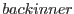
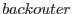

This task takes an OM OSW source list and a source number and produces region files for the source and its associated background to be used by the task EVSELECT in the OM Fast-mode. Alternatively, the task can produce a region file for the sky-coordinates for the sources detected in the OM Imaging-mode. . The source extraction region is a circle, centred on the source position and extending out to srcrad (default 3) times the FWHM of the source PSF (as given in the source list). The background extraction region is normally an annulus with the inner radius of  times the source extraction radius (default 1), and the outer boundary defined by  times the source extraction radius (default 2).
If the nearest neighbour is within srcrad FWHM of the source extraction circle, then the source extraction circle is reduced in size until the extraction region is no longer contaminated. A warning is issued in this case.
If a source is within srcrad FWHM of the background extraction annulus then a circle of srcrad FWHM surrounding this source is excluded from the background region.